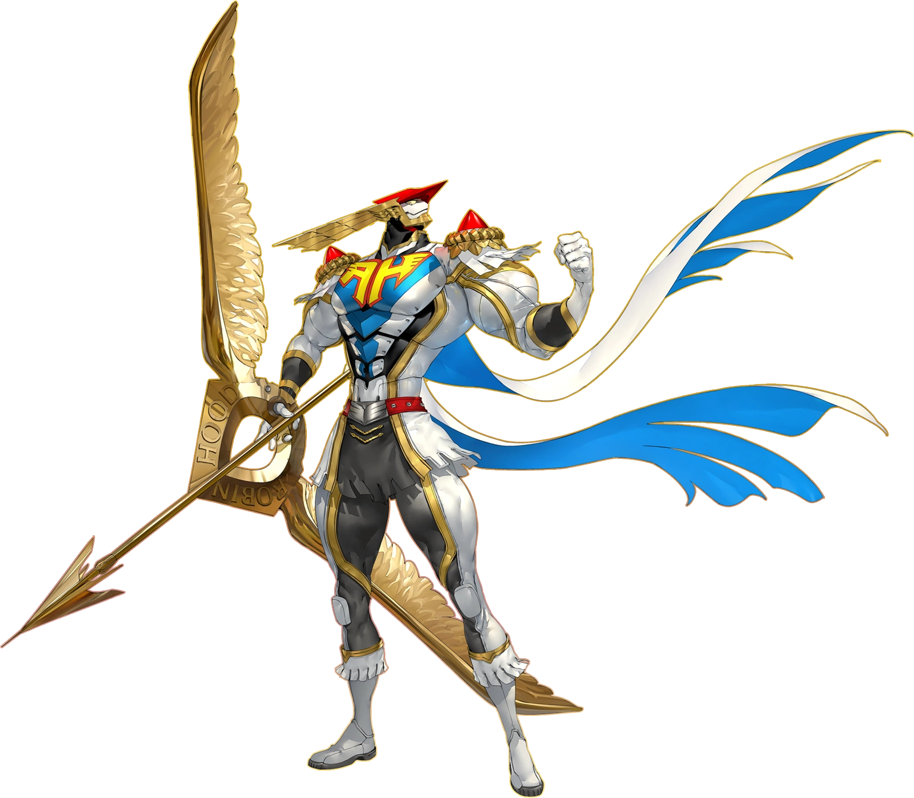
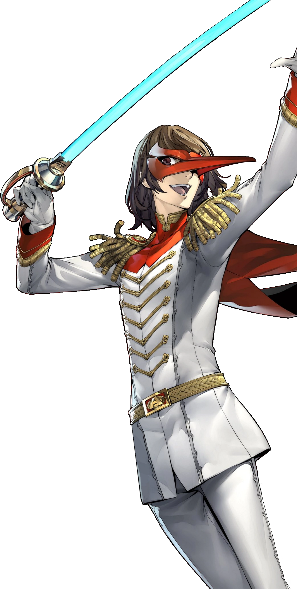
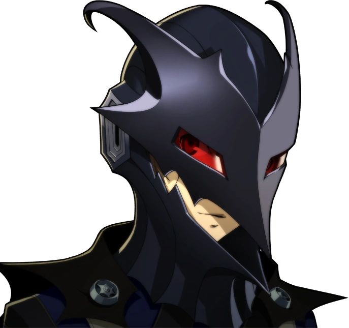
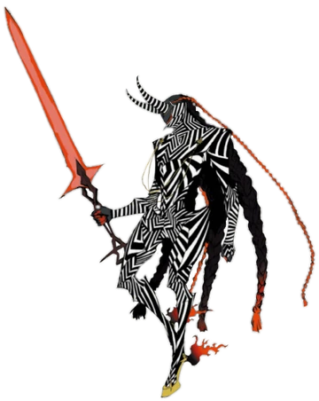
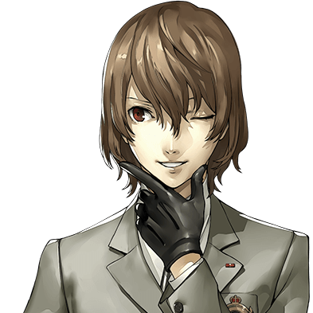

Introduction
Goro Akechi is the ninth unlockable character in Persona 5 Royal. He is the only human character who is not in school as he is a detective. He is investigating the Phantom Theives case. Ren first sees him during a school trip. He also acts as a rival to Ren.
Persona Unlocking
Goro came to Shujin Academy as a guest speaker who claims to have entered the metaverse. He says he was under attack until he unleashed his persona Robin Hood. He is later revealed to be an enemy of the Phantom Thieves where he attacks them. However, he is defeated. The Phantom Thieves try to tell Goro revenge isn’t worth it and he can instead work with them. However, due to Goro’s hatred to Ren he uses his berserk ability for a last ditch effort to defeat them which causes Robin Hood persona to turn into Loki.
Gallery
Robin Hood
Crow(apperence in metaverse)
Berserk Crow
Loki(apperence in metaverse)
Goro Akechi
Facts about Goto Akechi
- Code Name: Crow
- DOB(date of birth): February 19, 1998
- Age: 18
- Height: 178 cm (5'10")
- Primary Tool: Laser Sabers, Serrated Swords
- Secondary Tool: Ray Guns, Silenced Pistol
- Arcana(personality): Justice
- Persona(asssistant): RobinHood, Loki